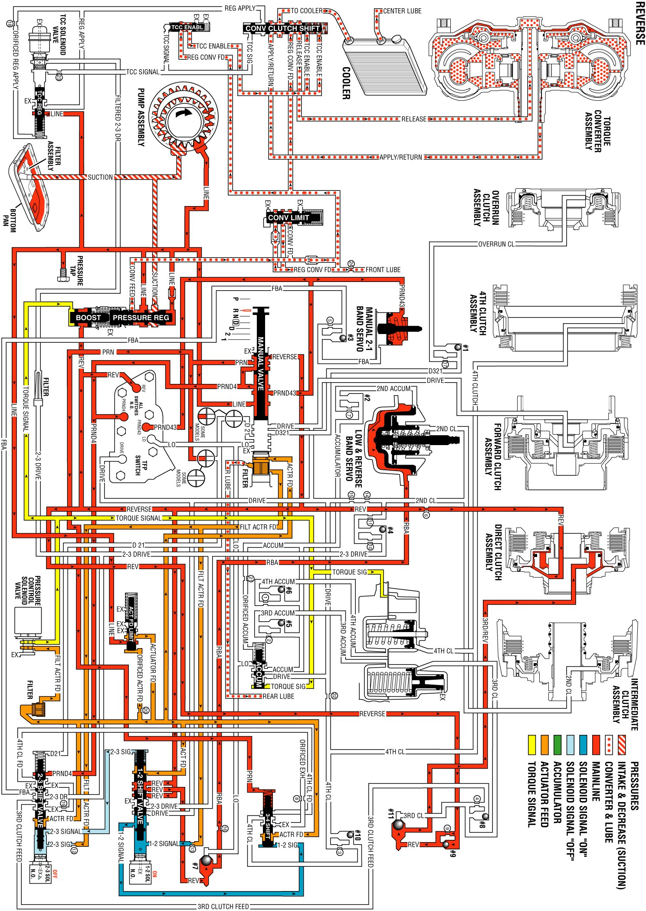

Reverse
Reverse
When you move the gear selector lever to the Reverse position, the manual valve blocks the line fluid pressure from entering the Drive, D321, D21 and Lo fluid circuits. These fluids exhaust at the manual valve. The manual valve allows the line fluid pressure to enter the Reverse, PRN, PRND43, and PRND4 hydraulic circuits.
Manual Valve
In the Reverse range, the line pressure from the pressure regulator valve is directed as Reverse, PRN, PRND4, and PRND43 fluid pressures at the manual valve. The Reverse fluid pressure is directed to the automatic transmission fluid pressure (TFP) manual valve position switch assembly, to the #9 checkball, to the direct clutch, to the 1-2 shift valve, and to the pressure regulator boost valve. The PRN fluid is directed to the 3-4 shift valve. The PRND4 fluid is directed to the TFP manual valve position switch and to the 2-3 shift valve. The PRND43 fluid is directed to the TFP manual valve position switch and to the manual 2-1 band servo.
Automatic Transmission Fluid Pressure (TFP) Manual Valve Position Switch Assembly
Reverse, PRND4, and PRND43 fluid pressures from the manual valve are directed to the respective switches on the TFP manual valve position switch. This sends a signal to the PCM that the transmission is in Reverse.
1-2 Shift Solenoid (1-2 SS) Valve
When the 1-2 SS valve is energized, 1-2 signal pressure forces the 1-2 shift valve to the extreme left.
2-3 Shift Solenoid (2-3 SS) Valve
When the 2-3 SS valve is de-energized, 2-3 signal fluid exhausts through the solenoid.
1-2 Shift Valve
1-2 signal fluid pressure holds the 1-2 shift valve to the extreme left. Reverse fluid pressure from the 1-2 shift valve seats the #7 checkball. The pressure is then directed to the low & reverse band servo, which applies the low & reverse band.
2-3 Shift Valve
Spring force holds the 2-3 shift valve to the extreme right. This blocks the PRND4 fluid pressure at the 2-3 shift valve, which is used in other gear ranges.
3-4 Shift Valve
The PRN fluid pressure forces the 3-4 shift valve to the extreme right.
Low and Reverse Band Servo
Reverse fluid pressure from the 1-2 shift valve seats the #7 checkball, flows through an orifice, flows through the case, and flows into the low and reverse band servo, which applies the low and reverse band. The Reverse fluid pressure changes to Rear Band Apply (RBA) fluid pressure at the orifice.
#9 and #11 Checkballs
Reverse fluid pressure from the manual valve seats the #9 checkball. This causes the fluid to flow through an orifice and to seat the #11 checkball, before flowing into the direct clutch. The Reverse fluid pressure changes to Third/Reverse fluid pressure at the orifice.
Direct Clutch
The Third/Reverse fluid pressure is directed through the case, through the center support, and into the direct clutch inner piston area. Reverse fluid pressure is directed to the direct clutch outer piston. The combination of these two pressures apply the direct clutch. Using both fluid pressures on an increased area of the piston increases the holding capacity of the clutch.
Reverse
